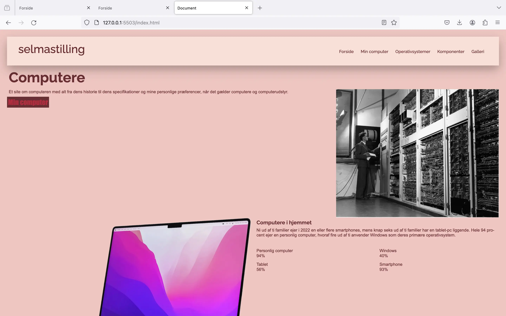

DIGITAL PORTFOLIO
02 Grundlæggende Web
I forløbet, Grundlæggende Web, blev vi introduceret til de mest anvendte redskaber i en multimediedesigners værktøjskasse. Vi har gennemgået brugervenlighed, centrale principper inden for design af brugergrænseflader, responsivt design samt anvendelsen af Visual Studio Code (VSC), inklusive relevante plugins og developer tools.

Computer site
I vores første opgave, computersite, skulle vi anvende vores viden om designkonventioner, gestaltlove og wireframes til at udføre to opgaver. Den første opgave var et "mobile-first"-design med fokus på brugervenlighed og responsivt design. Her arbejdede vi med CSS Grid, Flexbox og media queries. Denne opgave blev senere brugt til vores studiestartsprøve, hvor vi skulle anvende vores nye viden om brugergrænseflader og designkonventioner samt følge de uddelte layoutdiagrammer og wireframes.
